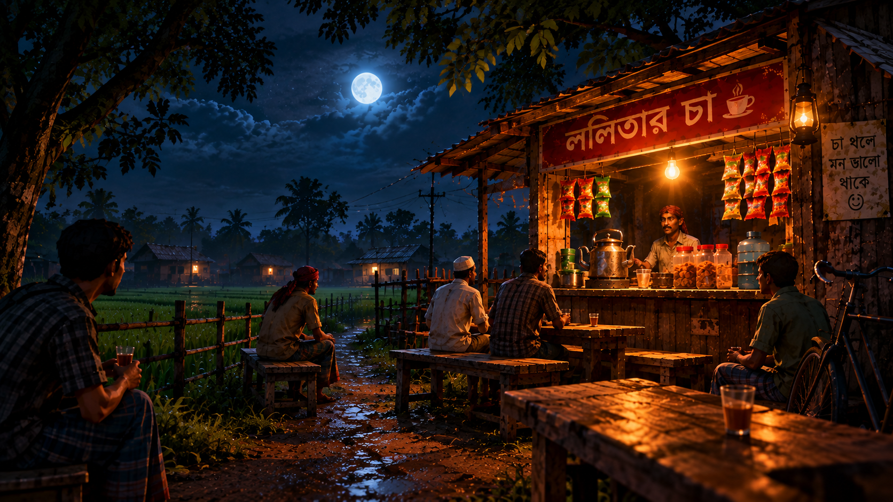
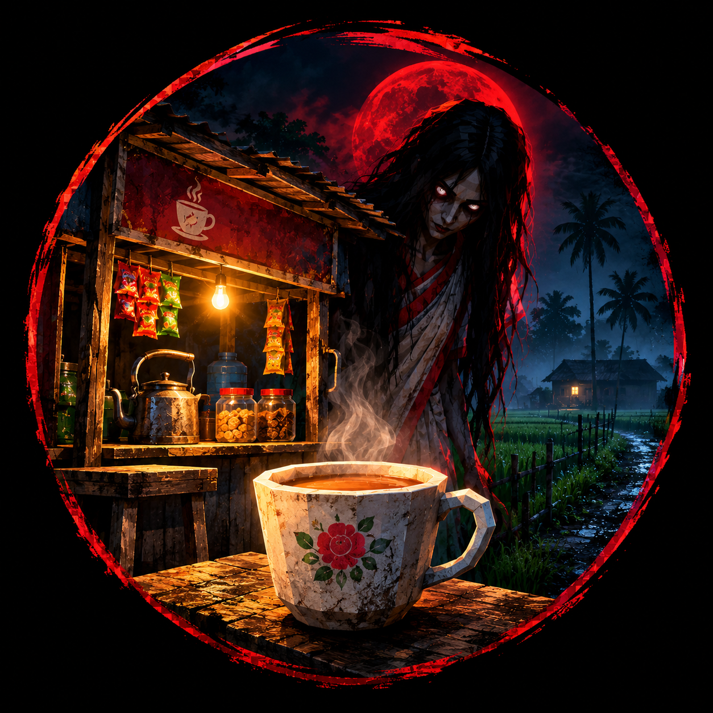

Keep the Stall Running
Open the shutter, fetch water, tend the kettle, make tea, serve snacks, and clear the cups people leave behind.


Bengali Folk Horror · Android · In Development
The village comes for tea. Someone else comes after dark.
Run a roadside tea stall through four days in a Bengali village. Keep the kettle on, serve the regulars, and ride home before the last order. The first two days feel ordinary. Then the nights begin to remember you.
The stall is ten minutes from home. The ride back feels longer each night.
Open the shutter, fetch water, tend the kettle, make tea, serve snacks, and clear the cups people leave behind.
Ride past rice fields and familiar faces. Farmers work, traffic rolls by, and regulars stop in to talk over tea.
The customers grow fewer. One woman keeps returning. On the ride home, you see her where nobody should be.
The familiar customer reveals what she is. Her last order must be finished before the stall closes.
A Bengali village tale told through everyday work, small mysteries, and the dread of the road home.
At first, Lalitar Cha is only a tea stall: a kettle on the fire, biscuits in jars, cups on the bench, and a cycle ride home at the end of the day. Then a woman begins to visit more often than anyone else. On Chaturdashi, she is seen crying beneath a tree on the road home. By Amavasya, the village has gone quiet and the last order has become a night you must survive.
Lalitar Cha: Last Order is in development for Android.